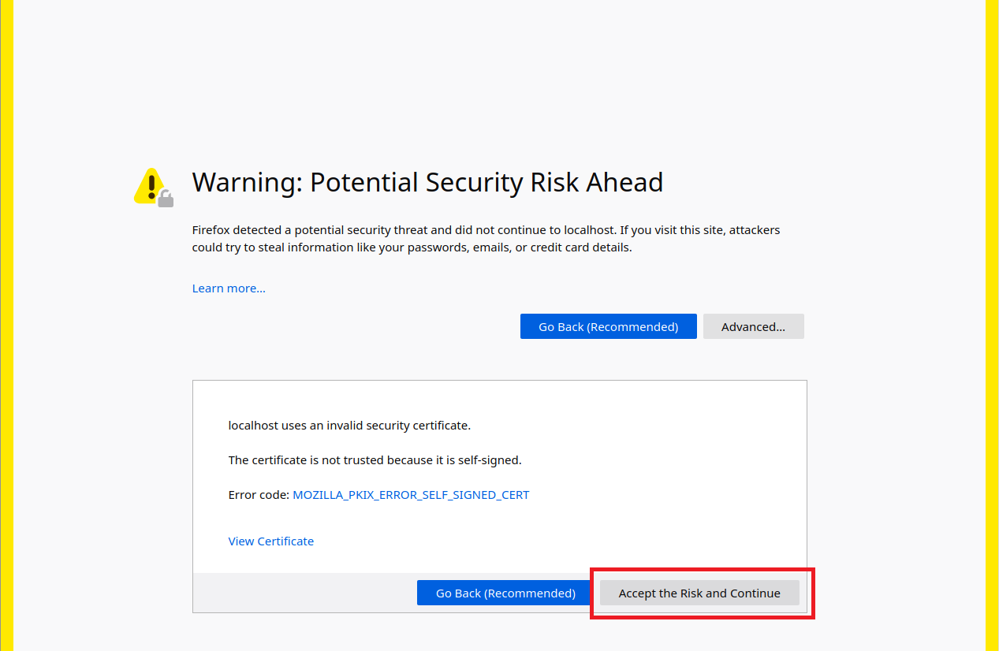

これは、42の課題 ft_server でウチイダが作成したdockerコンテナです
Nginxサーバ上で、WordPressとphpMyAdiminを動作させるDockerfileを作成しました
動作確認は、Ubuntu(42 VM)のFirefoxで行っています
課題の内容に加えて、docker コンテナを簡単に操作するためのMakefileを作成しました
以下に利用方法を記載します
"make build"で Docker イメージを作成します。イメージ名は他との重複を避けるため、「ft_server_y-uchiida」になります。
Docker イメージを再作成する場合は、"make rebuild" を実行してください。
$ make build
build image ft_server_y-uchiida ...
docker build -t ft_server_y-uchiida ./
Sending build context to Docker daemon 124.4kB
Step 1/13 : FROM debian:buster
...(以下略)...
Successfully built 81f8ceacd11f
Successfully tagged ft_server_y-uchiida:latest
"make run"で Docker コンテナを作成し、起動します。
ft_serverの課題のコンテナが、「ft_server_yuchiida」という名称で作成されます。
$ make run
docker image exist.
create new container...
5b12859d67348a6b2e2bdbb67d84e4b7efa74e3bb2967533c5aa15553bf0d002
$ docker ps
CONTAINER ID IMAGE COMMAND CREATED STATUS PORTS NAMES
5b12859d6734 ft_server_y-uchiida "/bin/bash start.sh …" 30 seconds ago Up 27 seconds 0.0.0.0:443->443/tcp, 0.0.0.0:8080->80/tcp ft_server_y-uchiida
"make clean"で Docker コンテナとイメージを削除します。
レビュー終了後の後始末にご利用ください。
$ make clean
stop container ft_server_y-uchiida...
ft_server_y-uchiida
remove container ft_server_y-uchiida...
ft_server_y-uchiida
remove docker image ft_server_y-uchiida...
Untagged: ft_server_y-uchiida:latest
Deleted: sha256:81f8ceacd11f5c798c5e535d6d38eb1aff6afbfb3a63788064bded1e09a0938c
Deleted: sha256:f16e23036b0933388ac428d3c78990714b678338d57ded69350799089a88a521
Deleted: sha256:9b00788f33b15c8791a7df308c1607c2ba0150ac6b2b649a90db3d9c5c3d4561
...(以下略)...
"make open"で localhostサーバーのトップページ(このページ)をfirefoxで開きます。
localhostが通信できない( == docker コンテナが動作していない)ときは、メッセージを表示します。
"make wordpress"と"make phpmyadmin"で、それぞれ wordpressとphpMyAdminのページを開きます。
$ make open
open https://localhost/
$ make open
localhost is not working. check container status. // <- コンテナが起動していない場合
$ make wordpress
open https://localhost/wordpress/
"make help"で 利用できるターゲット(サブコマンド)の一覧と用法を確認できます
$ make help
below targets you can use as sub-commands...
- build
-- build docker image as "ft_server_y-uchiida".
- rebuild
-- build docker image after removing current image.
- rm_image
-- remove image "ft_server_y-uchiida".
- run [NGINX_AUTOINDEX=off]
-- create container "ft_server_y-uchiida".
-- if a stopped container exist, restart it.
-- if a option "NGINX_AUTOINDEX=off" was set, nginx config change autoindex disable.
- stop
-- stop a runnning container "ft_server_y-uchiida".
- exec
-- connect /bin/bash to container "ft_server_y-uchiida".
-- if a container not exist or stopped, it will create or restart before connecting.
- autoindex-on
-- re-create container with nginx autoindex config engable.
-- this command force container remove.
- autoindex-off
-- container re-make with nginx autoindex config disable.
-- this command force container remove.
- open_local
-- open top page file on firefox with file:// protcol (as local file).
- open
-- open top page of localhost on firefox.
-- if not localhost(container) runnning, show massage.
- wordpress
-- open wordpress on firefox.
-- if not localhost(container) runnning, show massage.
- phpmyadmin
-- open phpmyadmin on firefox.
-- if not localhost(container) runnning, show massage.
- clean
-- remove docker container and docker image "ft_server_y-uchiida".
この課題では、https通信の実装が含まれています
しかし、ローカルの仮想環境では、適切なSSL証明書を作成することができません
そのため、通信の暗号化を行うためだけのSSL証明書を自分で作成する必要があります
きちんとした認証局を通さずに発行されたこのような証明書は「自己証明書」と呼ばれ、一般的なブラウザからアクセスした際に警告が表示されます
Linux VMのFirefoxでアクセスする際も、警告を無視してページを表示する必要があります
警告画面が表示されたら、画面右下の「Advanced」 > 「Accept the Risk and Continue」のボタンをクリックして、localhostにアクセスしてください。
レビューの際に確認してほしい項目を以下に記載します
もちろん、このほかの動作についても気になる部分があれば動作させてください
$ docker ps
CONTAINER ID IMAGE COMMAND CREATED STATUS PORTS NAMES
399e3c14cfeb ft_server_y-uchiida "/bin/bash start.sh …" 3 minutes ago Up 3 minutes 0.0.0.0:443->443/tcp, 0.0.0.0:8080->80/tcp ft_server_y-uchiida
$make exec
docker image exist.
docker container ft_server_y-uchiida is running.
root@399e3c14cfeb:/tmp# service --status-all
[ ? ] hwclock.sh
[ + ] mysql
[ + ] nginx
[ + ] php7.3-fpm
[ - ] procps
[ - ] rsync